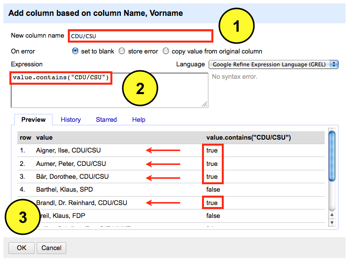
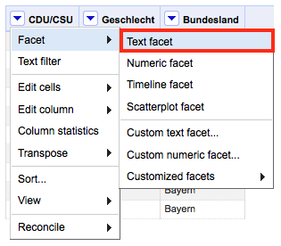
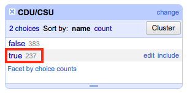
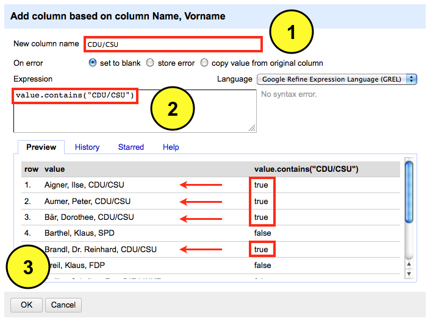
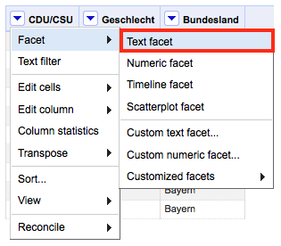
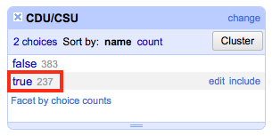

@pushthings4ward
Published: 14. März, 2012 CONTENT NUTZUNG: CC BY-NC-SA 3.0 Wenn ich mit großen Datensätzen arbeite, ist es unumgänglich das Hintergrundrauschen (Noise) auszublenden, um sich auf das zu untersuchende Detail zu konzentrieren. Mit OpenRefine lässt sich das sehr elegant lösen. Das Prinzip erkläre ich wieder anhand meines manipulierten Datensatzes, der hier heruntergeladen werden kann. Aus dem Datensatz, der Informationen über die Mitglieder des Bundestages (MdB) enthält, will ich lediglich jene Abgeordnete betrachten, die der
Wie gehe ich vor - ich werde eine neue Spalte mit dem Namen
Nachdem ich die Daten importiert habe, wähle ich das

Eine neue Eingabemaske öffnet sich. Hier definiere ich den Namen

Rechts neben der Spalte

Das Ergebnis der Fusion wird auf der linken Seite des Dashboards präsentiert. Ich habe 237 Zeilen die das Merkmal

Published: 14. März, 2012 CONTENT NUTZUNG: CC BY-NC-SA 3.0 Wenn ich mit großen Datensätzen arbeite, ist es unumgänglich das Hintergrundrauschen (Noise) auszublenden, um sich auf das zu untersuchende Detail zu konzentrieren. Mit OpenRefine lässt sich das sehr elegant lösen. Das Prinzip erkläre ich wieder anhand meines manipulierten Datensatzes, der hier heruntergeladen werden kann. Aus dem Datensatz, der Informationen über die Mitglieder des Bundestages (MdB) enthält, will ich lediglich jene Abgeordnete betrachten, die der
CDU/CSU angehören. Alle anderen Abgeordneten sollen für die Analyse ausgeblendet werden.
Wie gehe ich vor - ich werde eine neue Spalte mit dem Namen
"CDU/CSU" anlegen, die mit zwei Merkmalen bestückt sein wird - true und false. Dann lasse ich OpenRefine die Spalte "Name, Vorname" nach dem Merkmal CDU/CSU durchsuchen und das Ergebnis in die neue Spalte "CDU/CSU" übertragen. Anschließend werde ich über die Text Facet Funktion alle Merkmale ausblenden, die nicht meiner definierten Suche entsprechen.
Nachdem ich die Daten importiert habe, wähle ich das
Dropdown Menü der Spalte "Name, Vorname" aus. Dort fahre ich mit der Maus über den Menüpunkt Edit column und wähle aus dem sich öffnenden Fenster die Option Add column based on this column aus.
Eine neue Eingabemaske öffnet sich. Hier definiere ich den Namen
"CDU/CSU" der neuen Spalte, in der die Merkmale true und false abgelegt werden sollen. Danach weise ich OpenRefine mit dem Befehl value.contains("CDU/CSU") an die Spalte nach dem Merkmal "CDU/CSU" zu durchsuchen und das Ergebnis in die Spalte "CDU/CSU" einzutragen. Im Preview Fenster wird das Ergebnis präsentiert. Ich beende die Eingaben mit einem Klick auf OK und kehre automatisch zum Dashboard zurück.

Rechts neben der Spalte
"Name, Vorname" sieht man jetzt die Spalte "CDU/CSU". Als nächstes werde ich die zwei Ausprägungen true und false mit der Text Facet Funktion clustern.

Das Ergebnis der Fusion wird auf der linken Seite des Dashboards präsentiert. Ich habe 237 Zeilen die das Merkmal
CDU/CSU tragen sowie 383 Zeilen, auf die das nicht zutrifft. Wenn ich jetzt auf den Ausdruck true klicke, werden mir nur noch jene Zeilen angezeigt, die das definierte Merkmal tragen.
